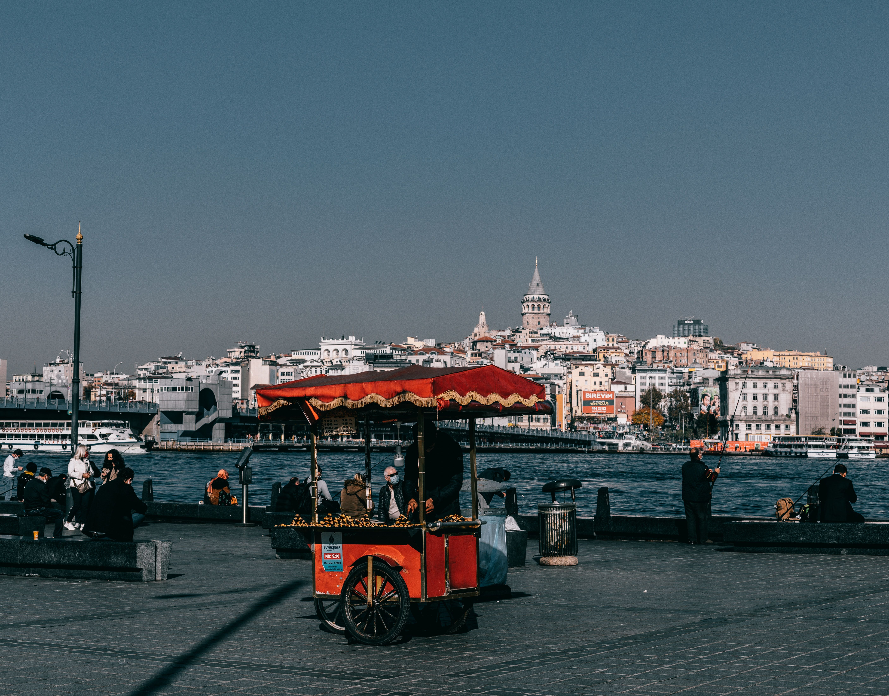
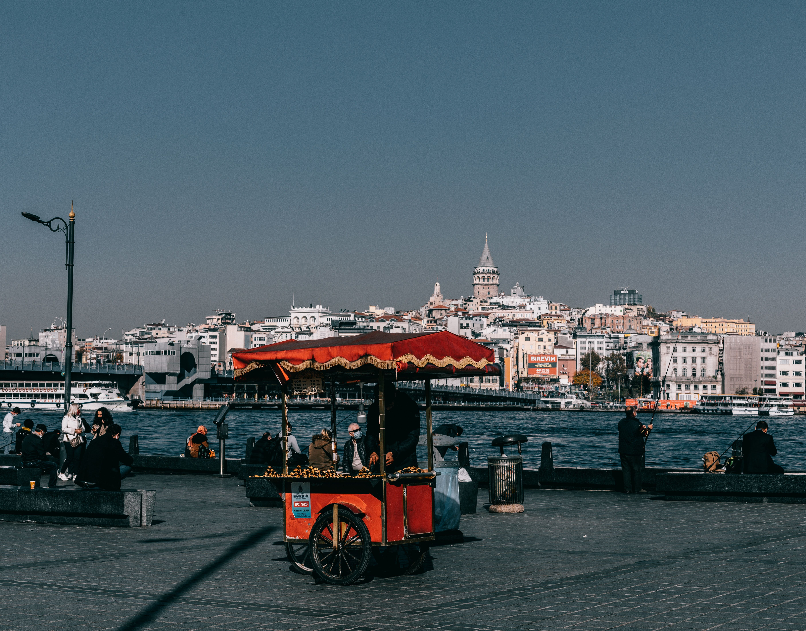

Why Istanbul?
A spellbinding city where cultures collide
Istanbul is a major city in Turkey that straddles Europe and Asia across the Bosphorus Strait. Its Old City reflects cultural influences of the many empires that once ruled here. In the Sultanahmet district, the open-air, Roman-era Hippodrome was for centuries the site of chariot races, and Egyptian obelisks also remain. The iconic Byzantine Hagia Sophia features a soaring 6th-century dome and rare Christian mosaics.
Over the centuries, many cultures have added their mark to Istanbul. Today, you can experience those influences firsthand by exploring its mahalles (neighborhoods). From the holy sites of Sultanahmet and the 19th-century European elegance of Beyoğlu to the high fashion of Nişantaşı, the vibrant cafe society of Kadıköy and the football-loving streets of Beşiktaş, it’s easy to see why travelers say that Istanbul isn’t just one city, but multiple cities within one.
CAFÉS
My favorite cafés in Istanbul
Çukurcuma Antiques & Cafe
Built in the 1990s as an Antique Auction and Art House, this exotic cafe offers a unique historical journey to their customers.
Address:
Firuzağa Mah, Çukur Cuma Cd. No:52B, 34425 Beyoğlu/İstanbul
What I like about it
Authentic, local cafe and antique shop, which makes you feel like you are having coffee or brunch in a small museum with covalent on a small side street with antique shops.
Learn more
Cafe Turing
Istanbul Coffeehouse is a Touring establishment where Turkish coffee and tea are served, loyal to the classical style.
Address:
Huzur Mah. Fazıl Kaftanoğlu Cad. No:2 34485 Sarıyer / İstanbul
What I like about it
This place offers a quiet environment where you can sip your coffee, served in finely embroidered cups, with meaningful talks just like in the old days.
Learn more
North Art Cafe
A stop at North Art is a great way to start your day, or take a break. Located on a quiet street, near the Blue Mosque. The tranquility of the place is appreciated by many.
Address:
Cankurtaran, Utangaç Sk. No:21, 34122 Fatih/İstanbul
What I like about it
Chill place with high tier coffee brews. Western style cuisine meets Istanbul traditional charm and modern artistic spirit.
Learn moreGALLERY
Photos of Istanbul
 
